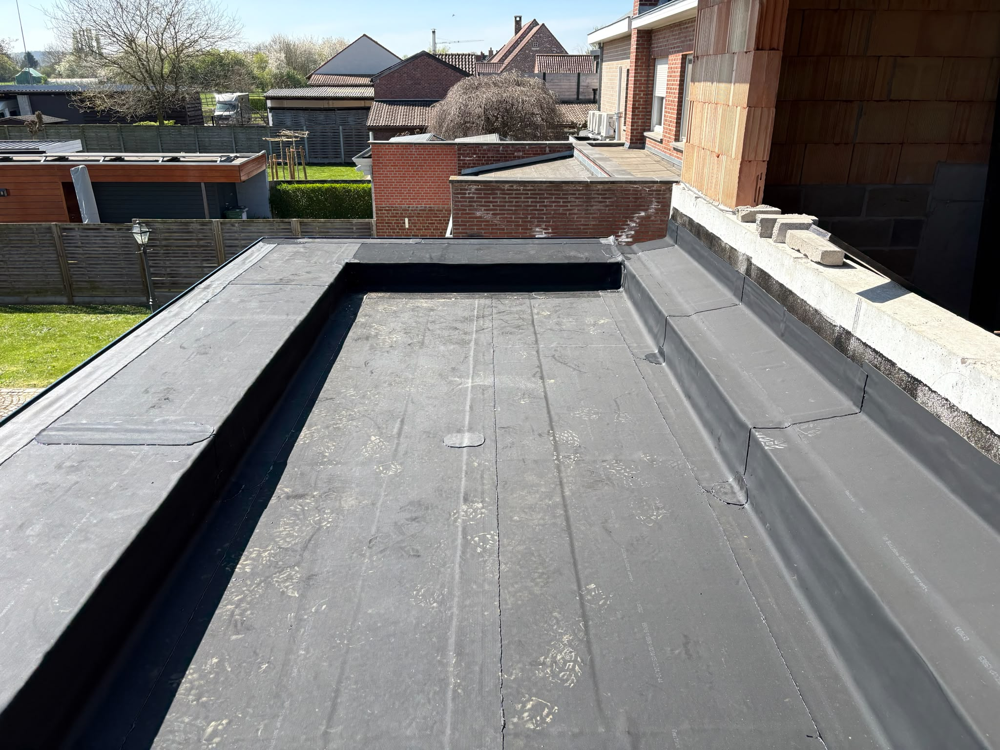
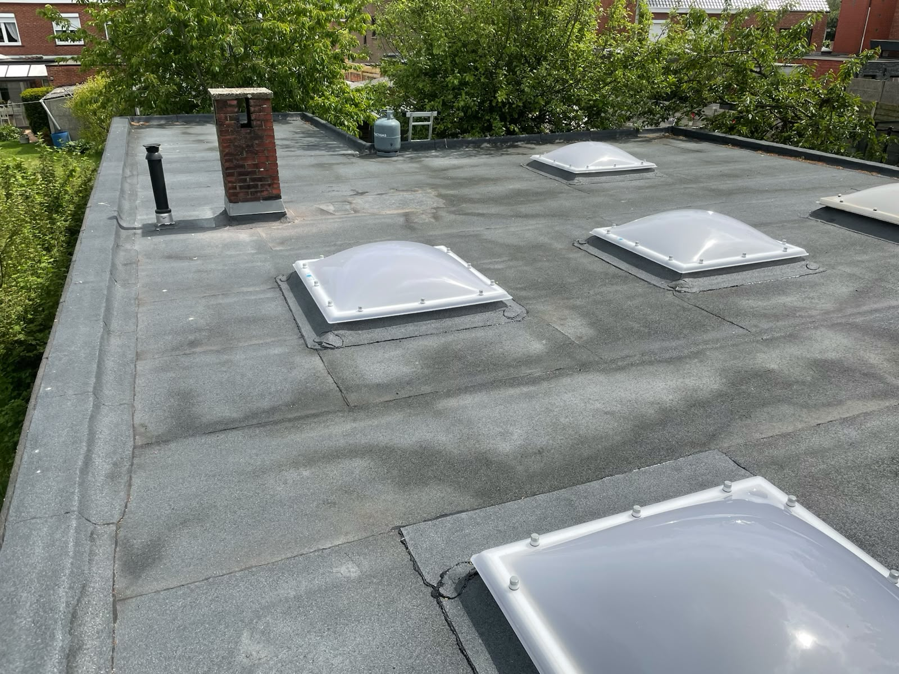
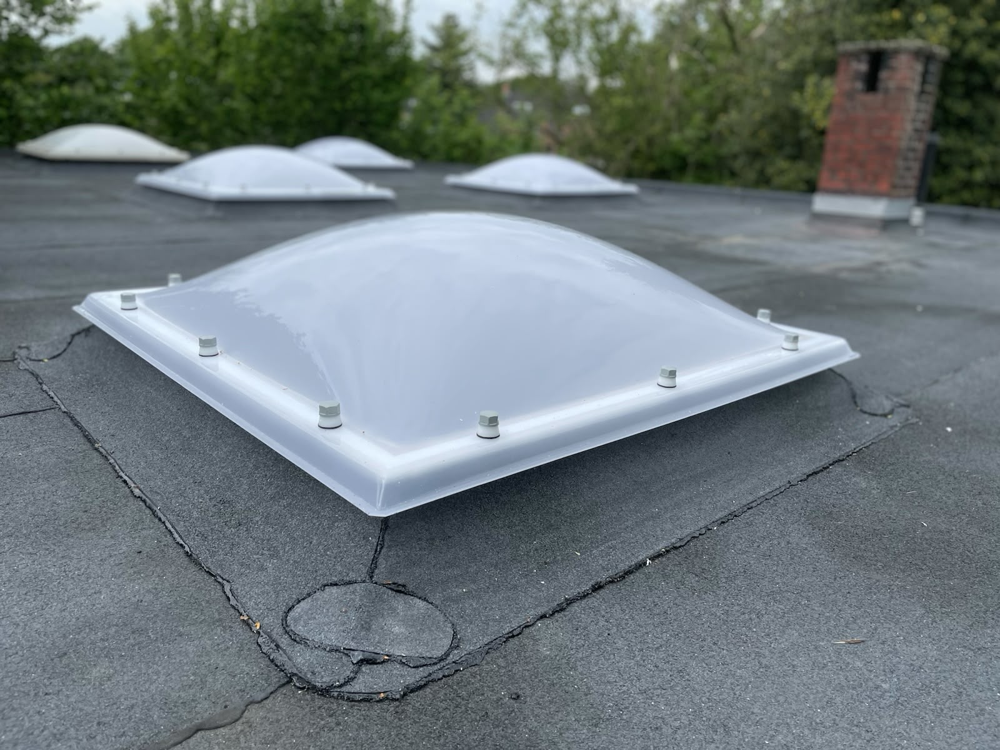
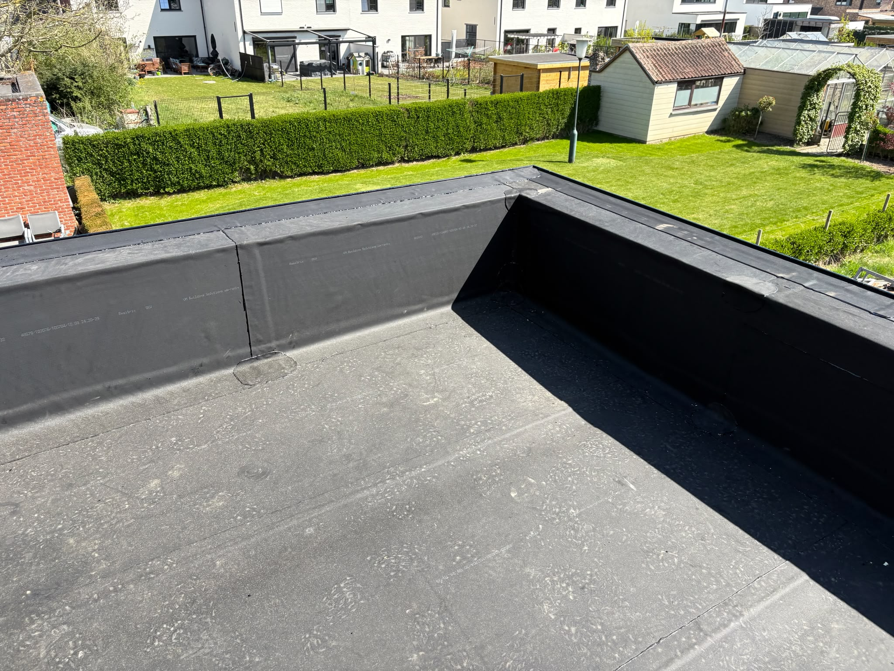

Herstel van platte daken
Heeft uw plat dak schade, slijtage of een probleem dat nagekeken moet worden? D Reynders Projects kan de situatie bekijken en bespreken welke herstelling nodig is.
Dakwerk voor platte daken
D Reynders Projects helpt met herstel, renovatie en nieuwbouw van platte daken. Met meer dan 20 jaar ervaring, aandacht voor een propere werf en een verzorgde afwerking.
Of het nu gaat om een dak dat aan vernieuwing toe is, een herstelling die bekeken moet worden of een plat dak bij nieuwbouw: u kunt ons contacteren voor een duidelijke afspraak.
Over D Reynders Projects
Bij een plat dak komt het aan op correcte uitvoering en zorg voor details. D Reynders Projects werkt aan platte daken met een praktische aanpak: eerst de situatie goed bekijken, daarna duidelijk afspreken wat er moet gebeuren.
Met meer dan 20 jaar ervaring ligt de focus op degelijk werk, een nette werf en een afwerking die klopt. Geen onnodige uitleg, wel duidelijke communicatie en vakwerk.
Diensten
Heeft uw plat dak schade, slijtage of een probleem dat nagekeken moet worden? D Reynders Projects kan de situatie bekijken en bespreken welke herstelling nodig is.
Wanneer een plat dak ouder wordt of niet meer in goede staat is, kan renovatie nodig zijn. We bekijken de bestaande situatie en voeren de werken uit met aandacht voor aansluiting, afwerking en orde op de werf.
Ook bij nieuwbouw kunt u terecht voor de uitvoering van een plat dak. De werken worden praktisch aangepakt, met oog voor een correcte plaatsing en een verzorgde afwerking.
Werkwijze
U belt of vult het contactformulier in met een korte omschrijving van uw vraag.
We bekijken wat er aan de hand is of wat er nodig is voor uw plat dak.
We bespreken de werken en maken duidelijke afspraken over de uitvoering.
Tijdens en na de werken is er aandacht voor orde, netheid en afwerking.
Werfvoorbeelden
Hieronder vindt u enkele voorbeelden van werven. De foto’s geven een beeld van het type werk en de afwerking.




FAQ
Een plat dak roept vaak praktische vragen op. Hieronder vindt u enkele antwoorden die kunnen helpen voor u contact opneemt.
U kunt D Reynders Projects contacteren voor herstel, renovatie en nieuwbouw van platte daken. Dat kan gaan om een bestaand plat dak dat nagekeken moet worden, een dak dat aan vernieuwing toe is of een plat dak bij een nieuwbouwproject.
De focus ligt op platte daken. Als uw vraag over een plat dak gaat, kunt u contact opnemen om de situatie te bespreken.
Ja. Bij schade, slijtage of een probleem aan een plat dak kunt u contact opnemen. De situatie wordt bekeken, waarna besproken wordt welke herstelling nodig is.
Ja. D Reynders Projects voert renovaties van platte daken uit. Bij renovatie wordt eerst gekeken naar de bestaande toestand, zodat duidelijk is welke werken nodig zijn en hoe de afwerking best wordt aangepakt.
Ja. U kunt telefonisch contact opnemen of het contactformulier invullen. Geef kort mee waarover het gaat, bijvoorbeeld herstel, renovatie of nieuwbouw van een plat dak.
D Reynders Projects is gevestigd in Helchteren, Limburg. Voor werken aan platte daken kunt u contact opnemen om te bespreken of uw locatie binnen de werkregio valt.
Contact
Heeft u een vraag over herstel, renovatie of nieuwbouw van een plat dak? Neem telefonisch contact op of stuur uw gegevens via het formulier. Dan bekijken we samen wat er nodig is.
D Reynders Projects